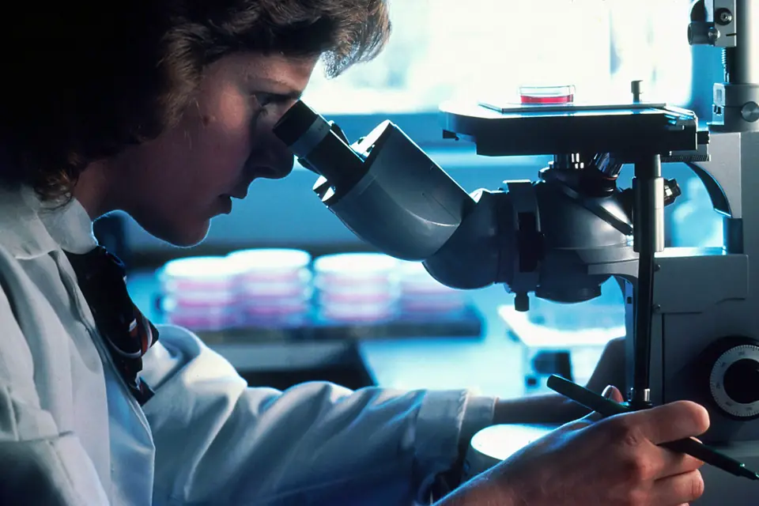

What microplastics do to the body
Before my family swapped anything, I read what scientists have found inside people. Here is what the studies show.

Plastic is already inside people
Scientists have now found microplastics in human blood, placentas, arteries and brains.
77%
In the blood
In a 2022 study, scientists found plastic particles in the blood of 17 of 22 healthy adults. PET, the plastic in water bottles, was one of the plastics found.
of healthy adults tested had plastic in their blood
4 of 6
In the placenta
Italian researchers found microplastic fragments in four of six placentas, on the side facing the mother and the side facing the baby.
placentas tested held microplastic
58%
In artery plaque
Of 257 patients who had plaque removed from a neck artery, 150 had polyethylene in it, the plastic used in bags and food wrap.
of patients had plastic in their artery plaque
+50%
In the brain
Brain samples from 2024 held about 50% more microplastic than samples from 2016, and brain tissue held more than liver or kidney tissue.
more microplastic in brain samples from 2024 than from 2016
Sources: Leslie et al., 2022; Ragusa et al., 2021; Marfella et al., 2024; Nihart et al., 2025.
Heart attack, stroke or death within about three years
Patients who had plaque removed from a neck artery, by whether the plaque held plastic.
Source: Marfella et al., New England Journal of Medicine, 2024.
Plastic in the arteries and heart risk
Doctors in Italy followed 257 patients for nearly three years after surgery to clear a neck artery. Of the patients with plastic in their plaque, 20% had a heart attack or stroke or died. Of the patients without it, 7.5% did.
After accounting for other risks, the researchers put the risk at about four and a half times as high. The study found a link and could not prove that the plastic caused the harm.
The chemicals in plastic
Plastic carries chemicals too. DEHP is a phthalate added to make plastic soft, and it is used in vinyl, food packaging and medical tubing.
A 2025 study estimated that DEHP exposure was linked to 356,238 deaths from heart disease worldwide in 2018 among adults 55 to 64. That is 13.5% of all heart disease deaths in that age group. The authors note their study was not designed to prove that DEHP alone caused those deaths.
Source: Hyman et al., eBioMedicine, 2025.
Where plastic enters a home
Four everyday sources, and the swap my family made for each one we could.
79 million
Cutting boards
Researchers estimated that a year of chopping on a polypropylene board can release about 79 million microplastic particles.
particles a year from one board
4 million
Heated containers
Three minutes in the microwave released as many as 4 million microplastic particles from each square centimeter of a plastic container, plus billions of smaller nanoplastics.
particles from one square centimeter of plastic
240,000
Bottled water
A 2024 study counted about 240,000 plastic particles in a liter of bottled water. Nine in ten were nanoplastics.
plastic particles in one liter
496,030
Polyester laundry
One 6 kg load of polyester clothes can shed about 496,030 fibers in the wash.
fibers from one load
Sources: Yadav et al., 2023; Hussain et al., 2023; Qian et al., 2024; Napper and Thompson, 2016.
What scientists are still learning
Many of these studies are small, and some of the ways of measuring plastic in the body are new. Researchers are still working out how much plastic people take in and how much harm it does. Every study here points the same direction, though, so my family decided to cut back now.
Start with the free swap list
Six swaps my family made, each with the price we paid.
Sources
- Leslie, Heather A., et al. Discovery and Quantification of Plastic Particle Pollution in Human Blood. Environment International 163 (2022).
- Ragusa, Antonio, et al. Plasticenta: First Evidence of Microplastics in Human Placenta. Environment International 146 (2021).
- Marfella, Raffaele, et al. Microplastics and Nanoplastics in Atheromas and Cardiovascular Events. New England Journal of Medicine 390, no. 10 (2024).
- Nihart, Alexander J., et al. Bioaccumulation of Microplastics in Decedent Human Brains. Nature Medicine (2025).
- Hyman, Sara, et al. Phthalate Exposure from Plastics and Cardiovascular Disease: Global Estimates of Attributable Mortality and Years Life Lost. eBioMedicine (2025).
- Yadav, et al. Cutting Boards: An Overlooked Source of Microplastics in Human Food? Environmental Science & Technology (2023).
- Hussain, Kazi Albab, et al. Assessing the Release of Microplastics and Nanoplastics from Plastic Containers and Reusable Food Pouches: Implications for Human Health. Environmental Science & Technology (2023).
- Qian, Naixin, et al. Rapid Single-Particle Chemical Imaging of Nanoplastics by SRS Microscopy. Proceedings of the National Academy of Sciences 121, no. 3 (2024).
- Napper, Imogen E., and Richard C. Thompson. Release of Synthetic Microplastic Plastic Fibres from Domestic Washing Machines: Effects of Fabric Type and Washing Conditions. Marine Pollution Bulletin 112 (2016).
Photo: Unsplash (National Cancer Institute).